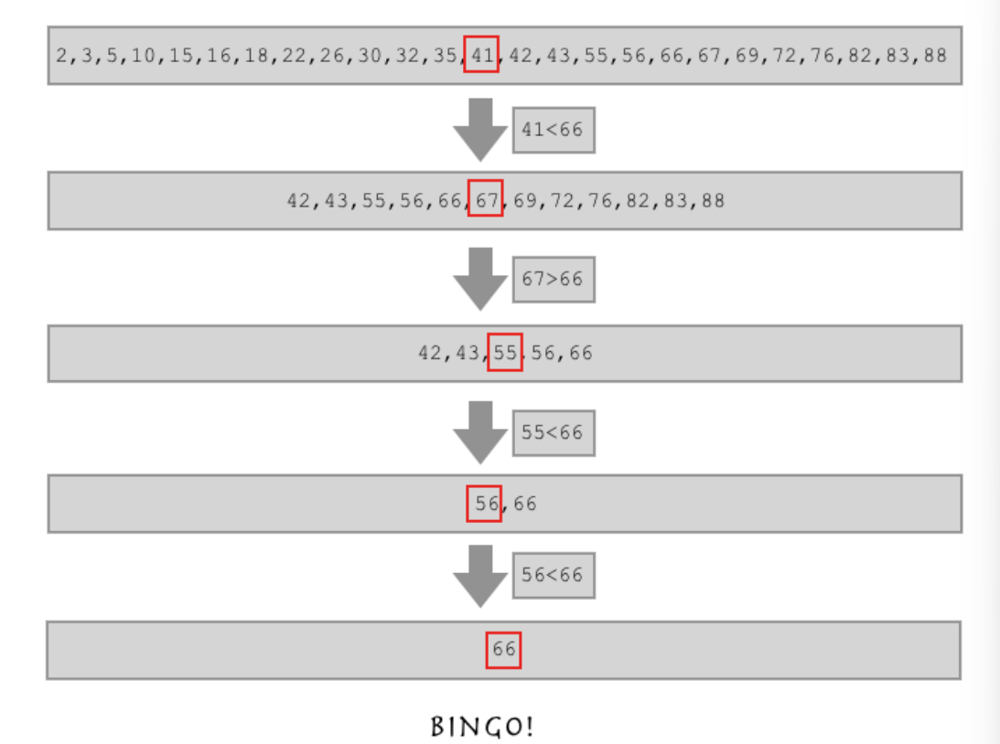

Python中的递归与二分查找
认识递归
- 递归的定义——在一个函数里再调用这个函数本身
- 为了防止递归无限进行，通常我们会指定一个退出条件
- 递归的最大深度——998
1 | |
998是python为了我们程序的内存优化所设定的一个默认值，我们当然还可以通过一些手段去修改它
1 | |
将python允许的递归深度设置为了1w，至于实际可以达到的深度就取决于计算机的性能了。
不推荐修改这个默认的递归深度，因为如果用998层递归都没有解决的问题是不适合使用递归来解决。
1 | |
将python允许的递归深度设置为了1w，至于实际可以达到的深度就取决于计算机的性能了。
不推荐修改这个默认的递归深度，因为如果用998层递归都没有解决的问题是不适合使用递归来解决。
汉诺塔问题
从左到右 A B C 柱 大盘子在下, 小盘子在上, 借助B柱将所有盘子从A柱移动到C柱, 期间只有一个原则: 大盘子只能在小盘子的下面.
我们只需要考虑如果有64层，先将A柱上的63层移动到B柱上，然后将A柱的第64个移动到C柱上，然后 将B柱上的63层移动到C柱上即可。
那怎么把63层都移到B柱上，这个问题可以用上面相同的方法解决。
https://zhangxiaoleiwk.gitee.io/h.html
1 | |
递归实现三级菜单
1 | |
二分查找算法
如果想在列表中查找某个数字，可以排序后从中间开始查找

1 | |
Python中的递归与二分查找
https://xiaolaji.site/20220930/Python中的递归与二分查找/